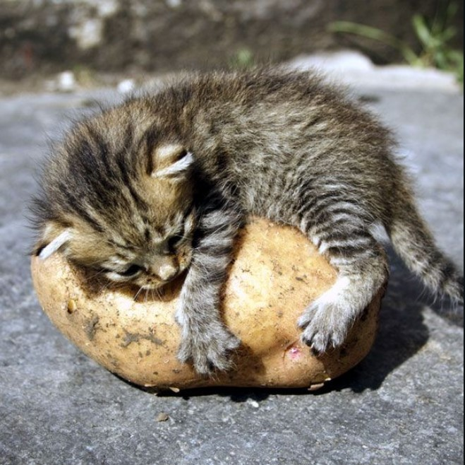
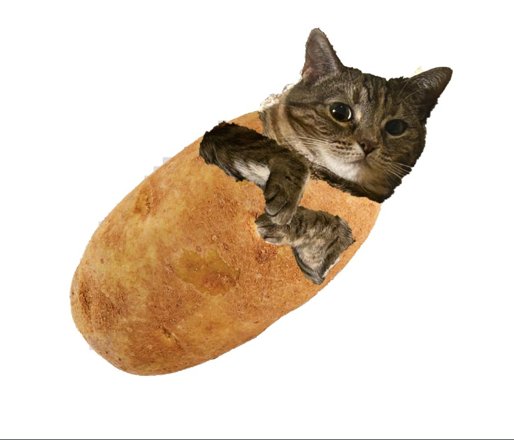
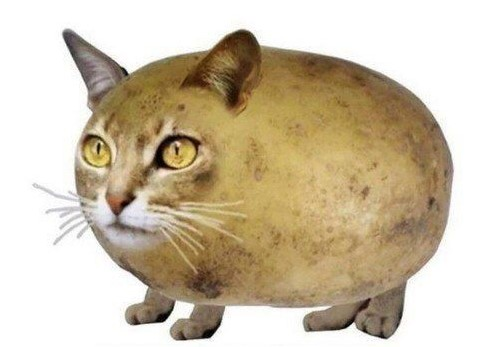

O Evento
  Prepare-se para o evento mais incrível do ano! No Encontro de Gatos e Batatas, você conhecerá o que há de melhor na combinação entre gatos fofos e batatas deliciosas!
- Palestras sobre o comportamento dos gatos ao redor de batatas.
- Workshops de como cultivar batatas para agradar seu gato.
- Painéis com discussões sobre o futuro das batatas na vida dos felinos.